01
Collect
Use a story form to gather background, photography journey, favorite images, and the stories behind selected photographs.
A content and storytelling case study documenting how I shaped photographer interviews into social-first stories, short-form videos, and repeatable creative workflows for SnapMatePhoto.
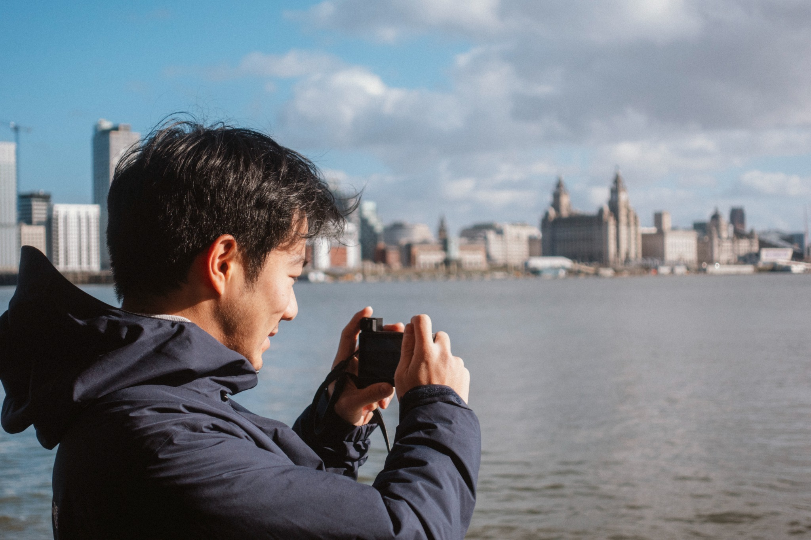
I worked across content planning, copywriting, and short-form video scripting—finding the human detail in each photographer’s story, shaping it into a clear narrative, and adapting it for social media.
The work began with understanding each photographer—not simply listing their services, but finding the moments, motivations, and visual signatures that made their work personal.
Use a story form to gather background, photography journey, favorite images, and the stories behind selected photographs.
Identify a central narrative, style keywords, emotional detail, and audience value from the photographer’s responses and portfolio.
Turn the story into a concise script, a social caption or carousel, a strong opening, and a clear booking-oriented CTA.
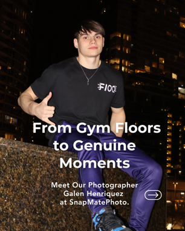
After an injury ended Galen’s senior gymnastics season, a used camera became a new way to stay connected with the team. The story moves from that turning point into a discovery of patience, persistence, and the beauty of natural moments.
This later piece shows a more developed narrative arc: a personal turning point, a clear creative motivation, and a human takeaway. The script was refined from an earlier draft to make the story more specific and focused.
View featured reel ↗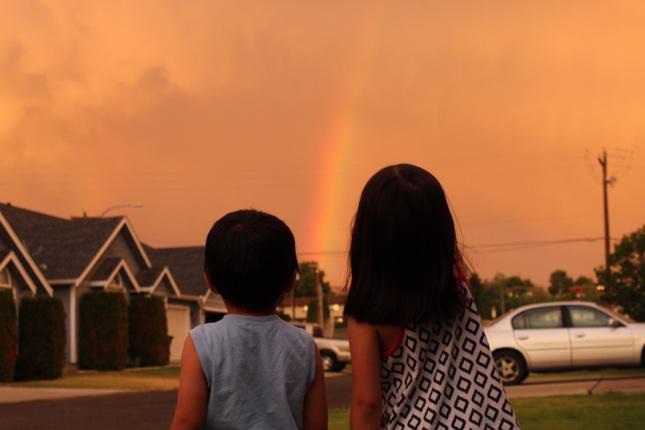
The story followed Kaylee’s path from receiving a Canon camera in 2018 to exploring studio lighting and portrait photography, connecting early experimentation with the work she creates today.
View published reel ↗Examples below are drawn from the project work log. Expand each card to read the script and documented revisions. Photographer identities are anonymized here for portfolio presentation.
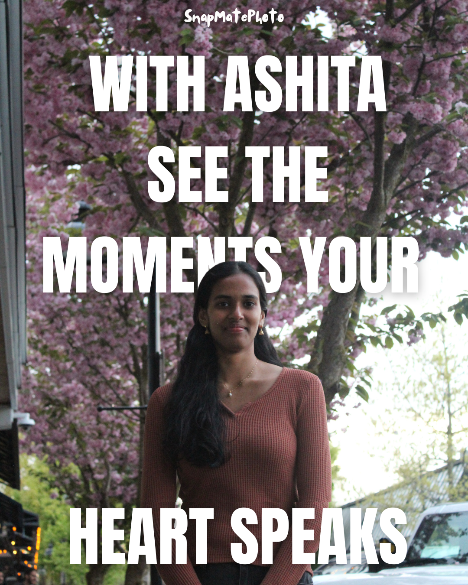
Angle: candid photography as a way to preserve youth, emotion, and connection.
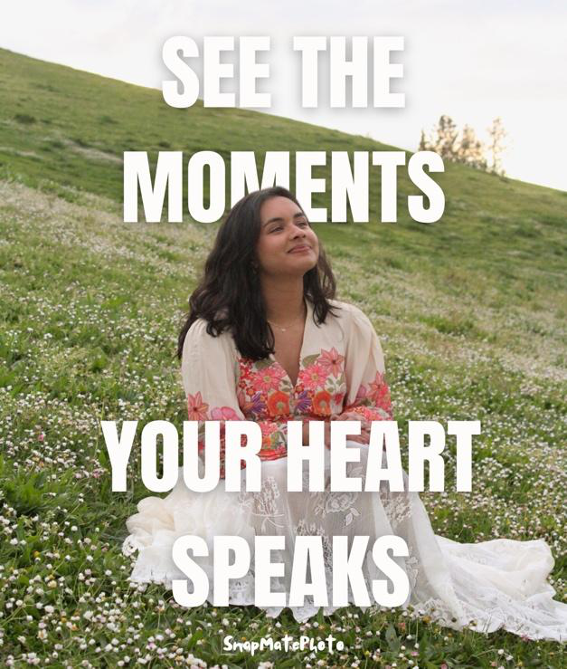
Angle: a camera gift that became a long-term creative pursuit, from experimentation to portraiture.
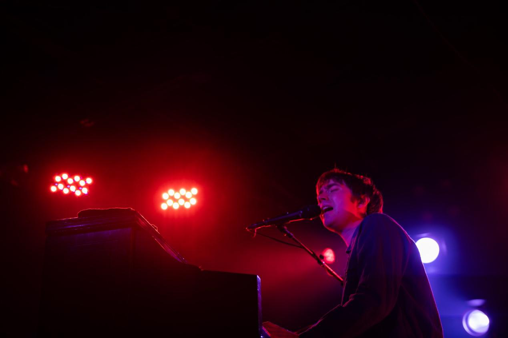
Angle: photography as immersion—from live music to everyday life.
Angle: finding a new creative outlet after a sports injury; learning patience and capturing honest moments.
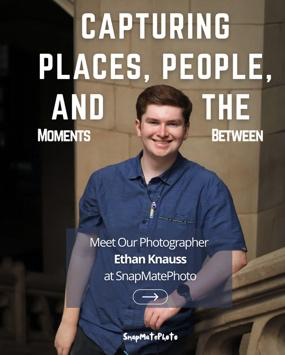
Angle: move from biography-led introduction to a more audience-facing opening.
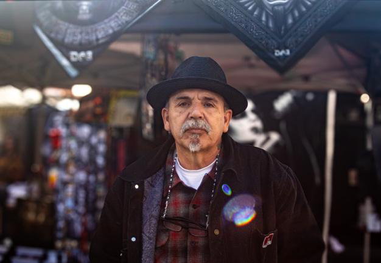
Angle: photography as a creative language, especially for stories rooted in culture and identity.
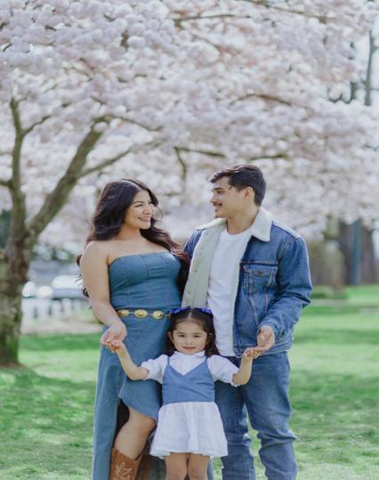
Angle: translate a broad service list into an emotional promise—real connection and in-between moments.
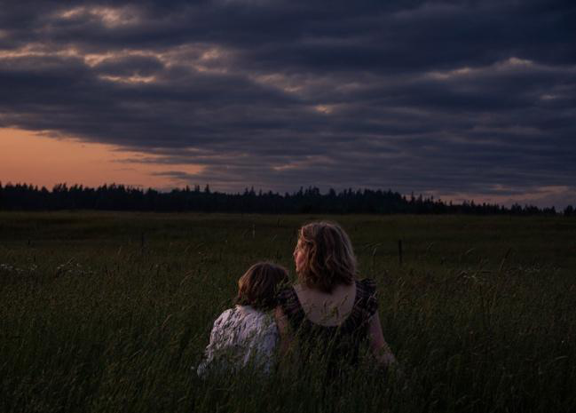
Angle: turn a distinctive visual world—handmade costumes, fantasy settings, and nature—into an aspirational invitation.
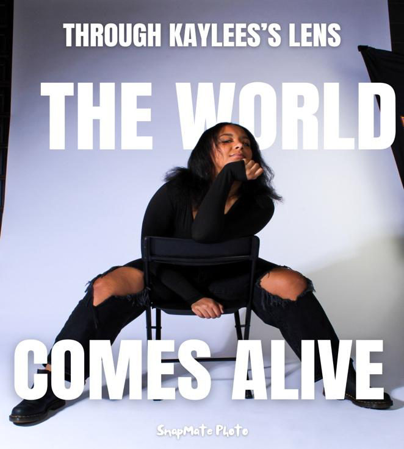
Explored visual hierarchy for photographer-led social covers, using a strong portrait, concise headline, and a clear relationship between image and message.
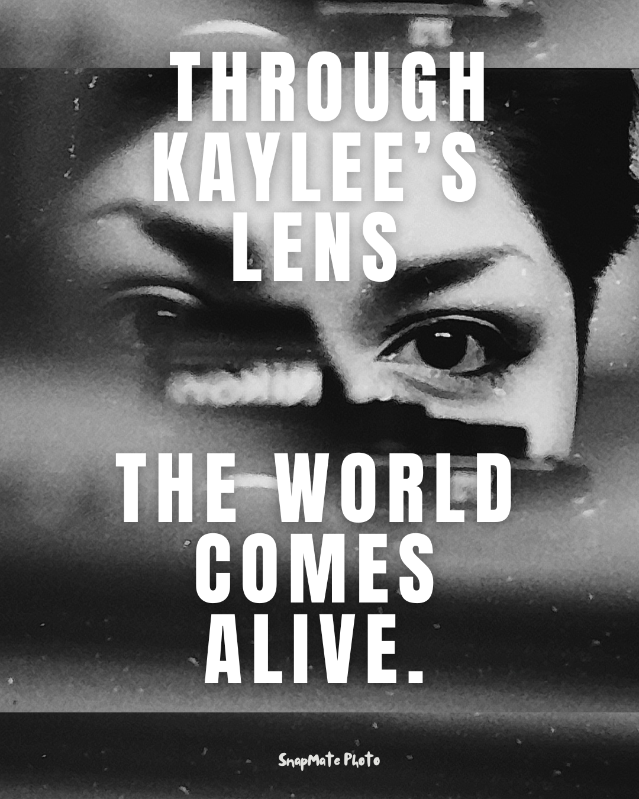
Project log also records support for the December 6 Joyeux Bazaar event, including event information research and an event-photo deliverable. The source archive points to a shared photo folder; the original event post/creative was not included in the materials available for this build.
Event reference ↗Names and handles are intentionally generalized in this public-facing portfolio. The original source archive contains additional personal information that is not reproduced here.
The project archive shows a progression in the writing approach: clearer openings, tighter narrative focus, more intentional CTA placement, and iterative editing.
The first photographer story, Ashitha’s, was an early learning point: translating a personal statement into a short social script. It helped establish the process and revealed where the storytelling could become sharper and more audience-focused.
Later drafts tested direct questions, contrast, and memorable phrasing to give viewers a reason to keep watching from the first line.
Scripts increasingly connected the hook to the photographer’s value and ended with a clear booking CTA. Views and follower activity became things to observe, not unsupported claims of growth.
The work log records multiple revisions: reducing repetition, tightening the biography, shifting from the photographer’s full name to a more natural reference, and testing a hook before the story body.
No historical performance figures were retained, so this case study focuses on documented creative changes rather than claiming a quantified uplift.
The photographer story series began before the script: a structured intake process helped gather the details needed for social storytelling.
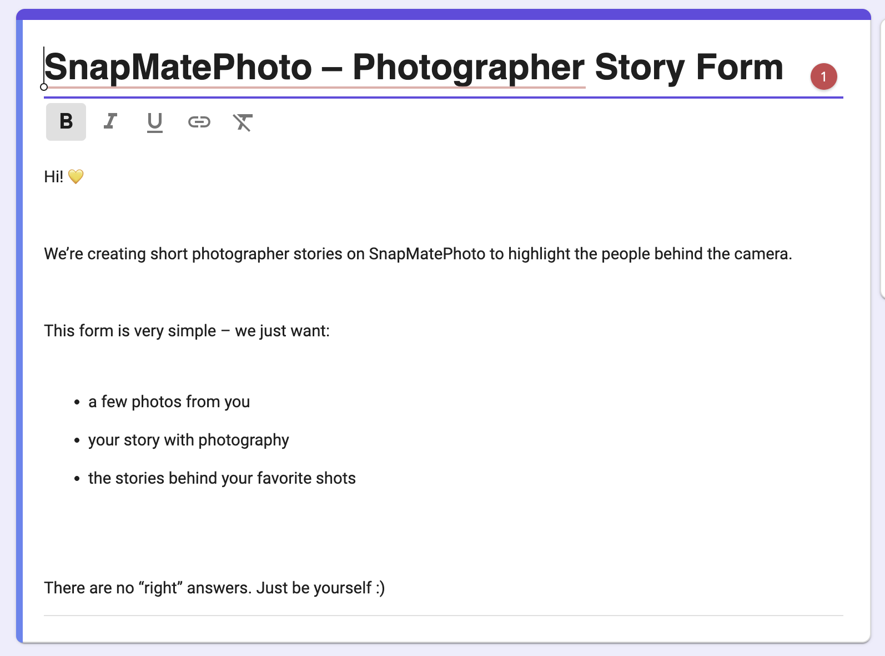
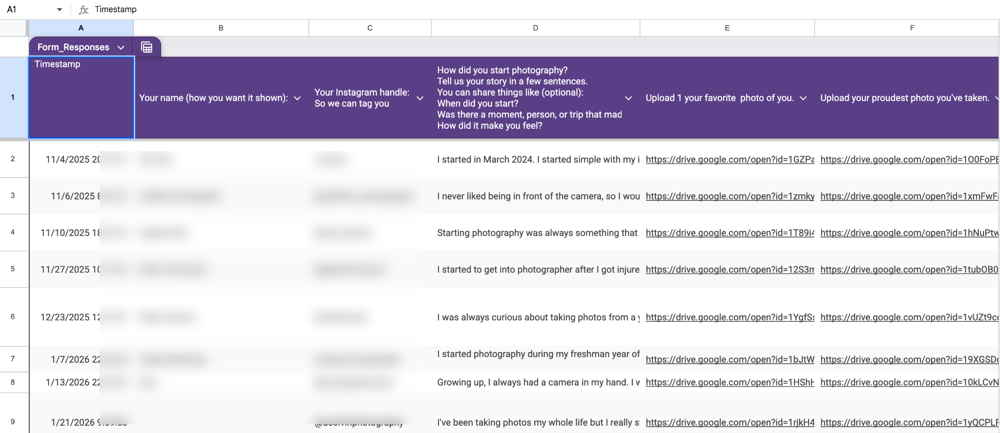
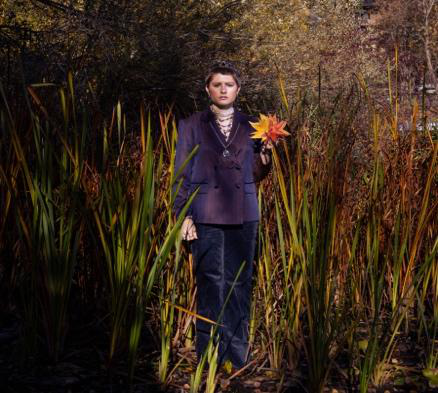
The form gathered the photographer’s starting point, motivation, favorite photograph, and the context behind selected images. Those responses became source material for scripts, captions, covers, and carousel storytelling.
This workflow connected story collection with creative execution rather than treating each post as a standalone graphic.
At the end of the role, I documented a production workflow for future content: information extraction, a 20-second script structure, voice-over, music selection, visual alignment, sound effects, final checks, Canva packaging, and carousel/cover design.
The guide formalized the process so the team could continue producing photographer stories beyond my time on the project.
Content planning · Copywriting · Short-form video scripts · Social storytelling · Production documentation